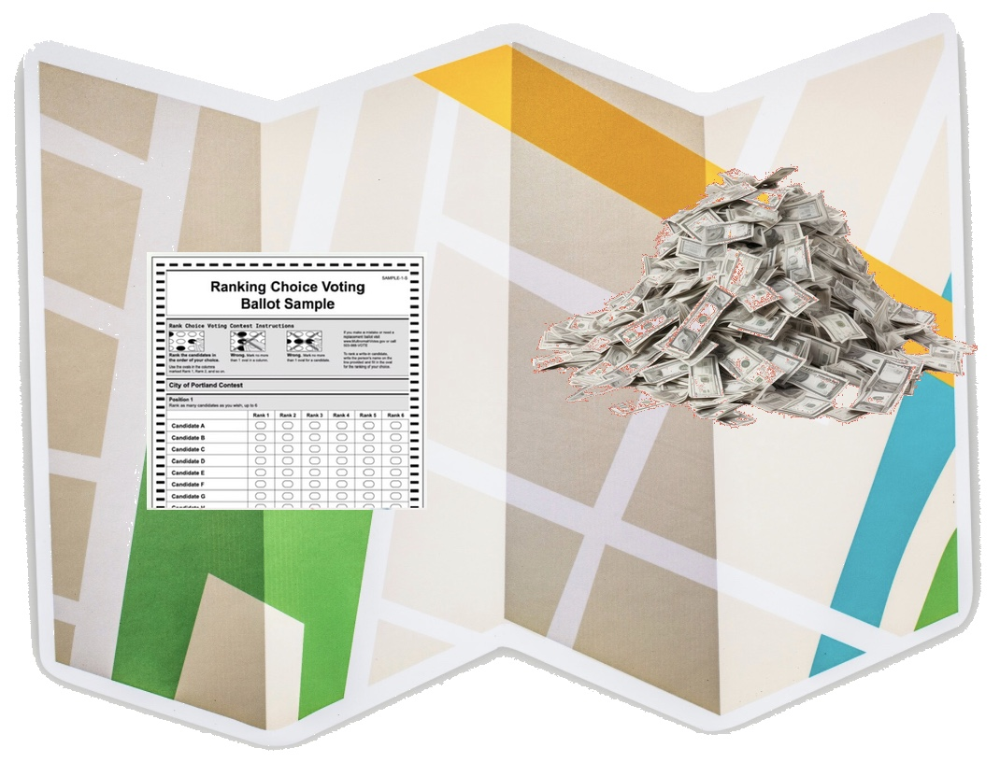

Maps, Ballots, Money

About
The time has come that we the people need to take back control of our democracy. The key problem is changes and abuse of the representative system. Changes need to start at the state level. This page concentrates on North Carolina but it can give you ideas for what you state might need.
- Maps: Fairly drawn political districts
- Ballots: Our system leads to 2 parties and abuses. Ranked choice ballots could fix it.
- Money: Unlimited spending has destroyed our representative government.
Resources
- NC House Maps: 2026 Election